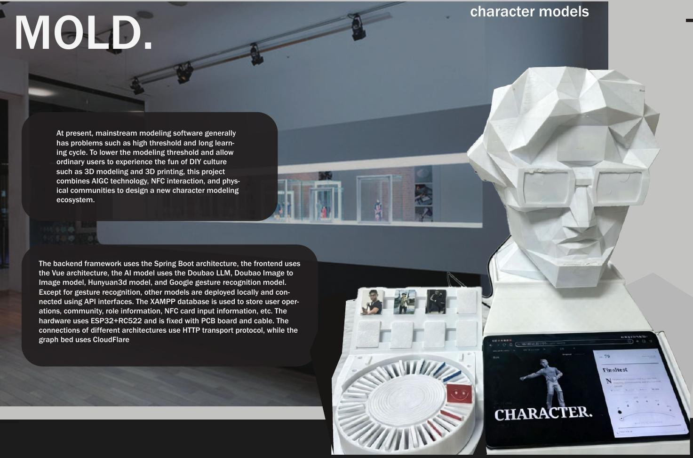
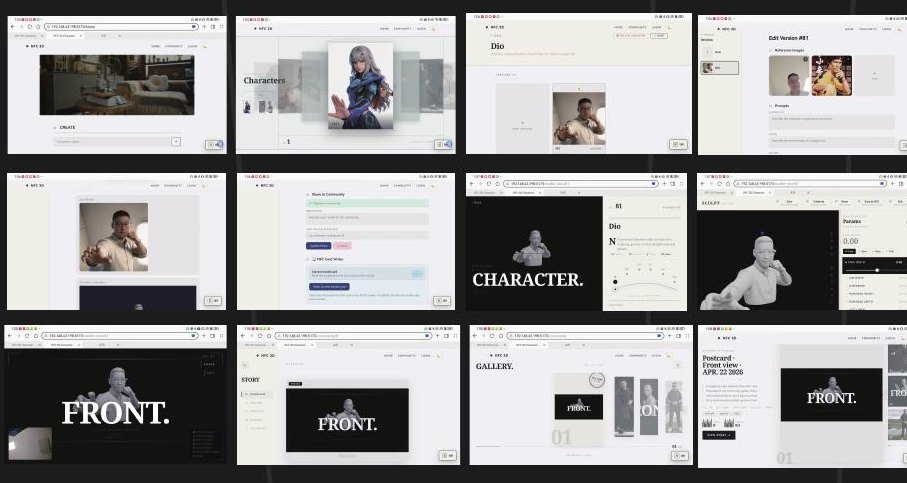

Generative AI, Vue/Spring Boot interfaces, NFC controls and physical interaction. / 毕业设计：AI、网页界面与 NFC 实体交互。


Browse source code / 查看完整源码 →Interface film / 界面演示Physical interaction film / 用法演示Project notes / 项目说明